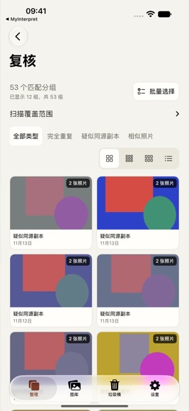

照片去重
Imagines duplicatas deleo
我清除重复影像
在 iPhone、iPad 和 Mac 上扫描重复照片，查看匹配依据，逐张对比并决定保留哪张。照片分析在设备上完成。
普通版可扫描、预览和整理拟删除清单。一次性购买 Pro 后，可在确认清单后提交系统清理。
iPhone · iPhone Duo · iPad · Mac

在设备上扫描
按图库、相册或日期选取范围。分析由本机完成。
滚动浏览，逐张对比
继续滚动可查看更多分组。打开预览可切换照片、放大查看。
保留你选的照片
复核拟删除清单，购买 Pro 后可交由系统确认删除。
PhotoDeleo
View the English Review screen · Get support

Imagines duplicatas deleo
I delete duplicate images.
Find duplicate photos on iPhone, iPhone Duo, iPad, and Mac. Review the match evidence, compare photos, and choose which ones to keep. Photo analysis runs on your device.
Scan, preview, and prepare a cleanup list for free. A one-time Pro purchase lets you submit the reviewed list to Photos for deletion.